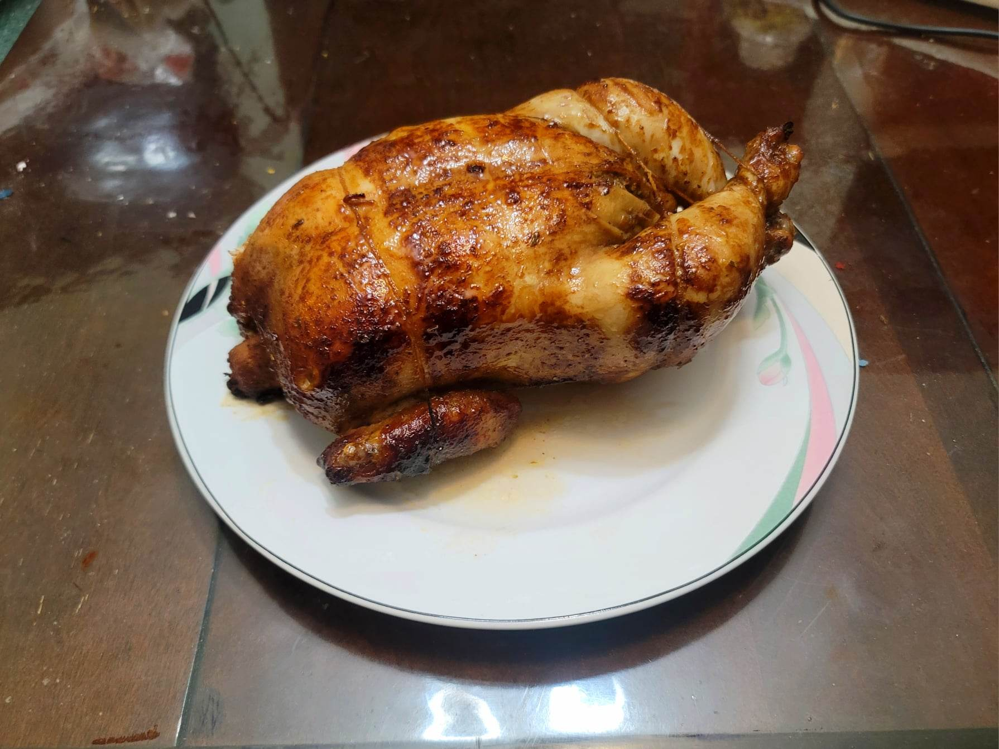

Pollo a la Brasa

Ingredients:
- 4-5 lb Whole chicken
- 4 cloves Garlic, grated
- 1 tbsp Ají amarillo paste
- 1 tbsp Honey
- 2 tbsp Soy sauce
- 1 tsp Ají panca paste
- 1 tsp Paprika
- 1 tsp Dried oregano
- 1 tsp Coriander
- 1 tsp Cumin
- 1 Lime, juiced
- Salt, to taste
- Black pepper, to taste
Instructions:
- Combine all the marinade ingredients together and massage it into all parts of the chicken. Let marinate overnight, occasionally flipping the chicken and re-rubbing the marinade into it.
- Truss and skewer the chicken. Place into a rotisserie and cook for 15 minutes per pound, about 60-75 minutes.
- Remove from the rotisserie and let cool for about 10 minutes. Carve and serve hot with ají amarillo sauce.